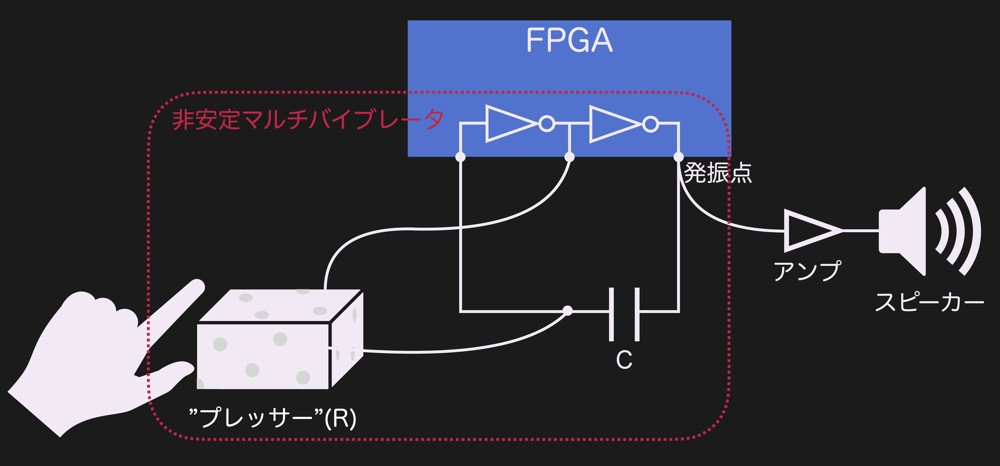

製作物の紹介
スポンジの押し加減で音程が変化する電子楽器

コンセプト
ギターやピアノなどの楽器はコードを弾くときなどで指の長さが足りず演奏を諦めてしまう人が多い。そこで指の長さに依存せずに演奏できる楽器の作製を目指した。
作製した電子楽器の原理
作製にはFPGAという論理回路を自由に書き換えることができるLSIを使用した。
FPGA内にNOT回路を二つ書き込み、その入出力に抵抗とコンデンサを接続することで非安定マルチバイブレーターという発振現象が起こる。
音は空気の振動によって人の耳に伝わってくるため、この非安定マルチバイブレーターの発振箇所をアンプを通してスピーカーに入力することで音にする仕組みである。

発振を英語にするとoscillationといい、シンセサイザーの音源部分であるoscillatorと同じ機構をデジタル回路で作製したといえば想像しやすい。
この発振の周波数は抵抗値と静電容量によって決まる。回路の抵抗を抵抗が変化するスポンジ状のセンサーにすることでスポンジの形状変化が抵抗値変化となり、周波数の変化につながる。
ここでいう発振の周波数はスピーカーで音として鳴らした時に音高(音の基本周波数)として出力されるため、スポンジの操作がそのまま音高の操作となる。
作製したプロトタイプのデモ
作製したプロトタイプで音階っぽく弾いてみたデモ動画
特長
この楽器の特長として二つあげられる。一つ目は楽器の“音”としての面白さである。現代 多くの人に愛されている音楽のジャンルのほとんどは、⻄洋音楽に起因するものであると言える。
どのようなジャンルの音楽にも楽譜が存在し、音の高さを離散的にとらえ、その中のある程度決まったパターンを音階として演奏していくスタイルだからである。
しかしこの楽器は音の高さが連続的に変化するためこれまでの王道の音楽スタイルとは全く別の音楽的表現ができる可能性を秘めていると考えている。
二つ目はデジタル回路を使用したハードウェアのみで作製できることである。そのため将来的には楽器をICチップとして作製することが可能であり、実際に発振回路の一部はICが完成している。
電源供給や音の出力に工夫が必要ではあるが楽器本体は指先に貼り付けたり埋め込んだりできるレベルで小型化が実現できる。